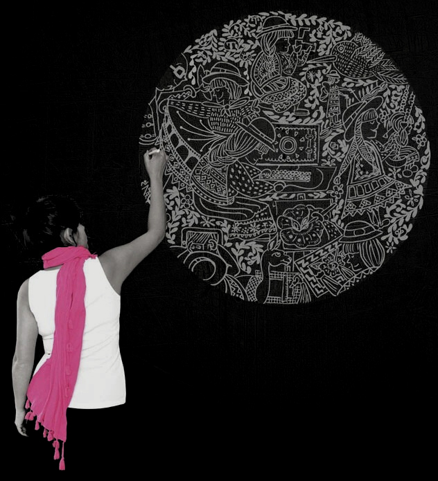

15+ Jahre Markenidentität, Editorial und Packaging — für BMW ALPINA, ALPINA WEIN und Clormann Design (Red Dot Award 2014). Heute erweitert um KI-gestützte Kreativ-Workflows.
Mein Fokus liegt auf visuellen Systemen, die Marken über Print und Digital hinweg tragen. Vier Sprachen, drei Länder, zwei Wurzeln, fünfzehn Jahre Praxis — und ein Auge für die Details, die in der Reinzeichnung den Unterschied machen. Heute arbeite ich mit KI-gestützten Workflows, ohne dabei die handwerkliche Tiefe aufzugeben.
Das Handwerk bleibt. Die Werkzeuge verändern sich. Ich erweitere meine klassische Designpraxis um KI-gestützte Kreativprozesse, generative Bild- und Videoproduktion und persönliche Experimente.
Nicht, um Technologie einfach einzusetzen. Sondern um schneller zu denken, mehr auszuprobieren und Ideen in neue Formen zu bringen.
Weitere Projekte finden Sie auf Behance. Mehr auf Behance →

Ich bin Carola Chiara Cordero — peruanisch-italienische Grafikdesignerin mit Hochschulabschluss in Kunst & Grafik-Design (Universidad San Ignacio de Loyola, Lima). Seit 2008 in Deutschland, mit 15+ Jahren Berufserfahrung zwischen Lima, Augsburg und Panama.
Meine Spezialisierung liegt in Markenidentität, Editorial Design und Packaging. Mein aktueller Fokus: Erweiterung in Motion Design, UI und KI-gestützte Kreativ-Produktion — sichtbar in meinem jüngsten Case Study zur Kampagne »Gutes mit Haltung«.
Reinzeichnung und Druckvorstufe als Disziplin.
Ich denke in Systemen — von Print bis Digital, mit KI als Werkzeug.
Briefings auf Spanisch, Deutsch, Italienisch oder Englisch — mit Ruhe, auch unter Druck.
Illustration und Lettering als eigene Stimme.
Ich glaube nicht an fertige Versionen. Ich arbeite, lerne, beobachte, verwerfe, entwickle weiter. Was heute eine Linie ist, kann morgen ein System werden. Was heute ein Experiment ist, kann morgen ein Projekt sein.
Ich suche nicht nach dem nächsten Kapitel. Ich gestalte es — am liebsten in einem Team in Bayern, in dem Markenidentität, Editorial und digitale Kommunikation unter einem Dach leben.
Let's build what comes next.